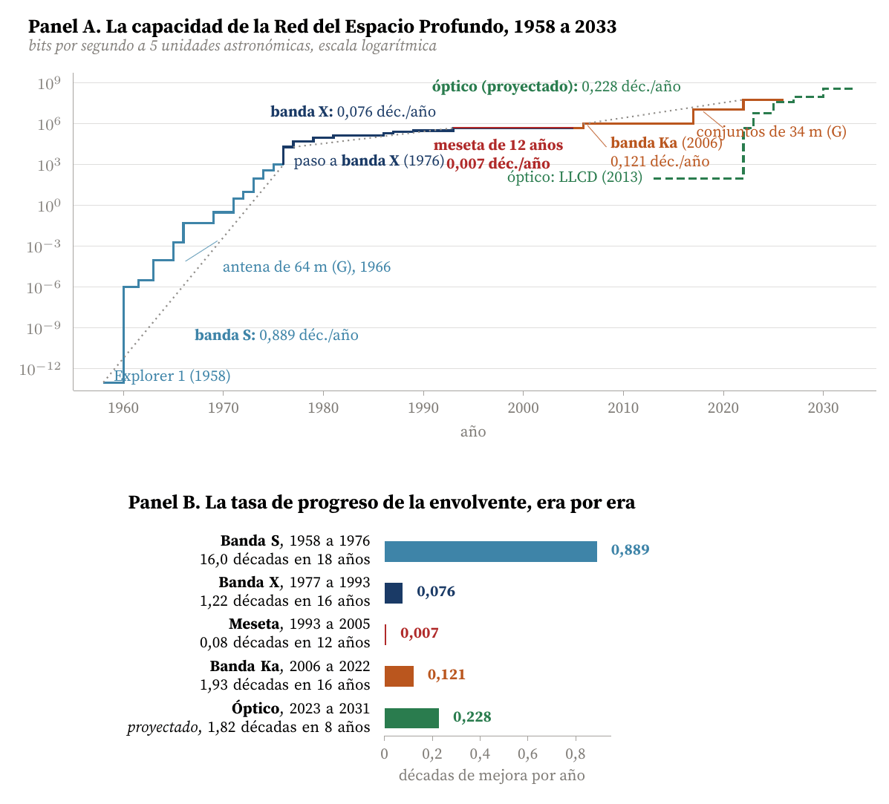
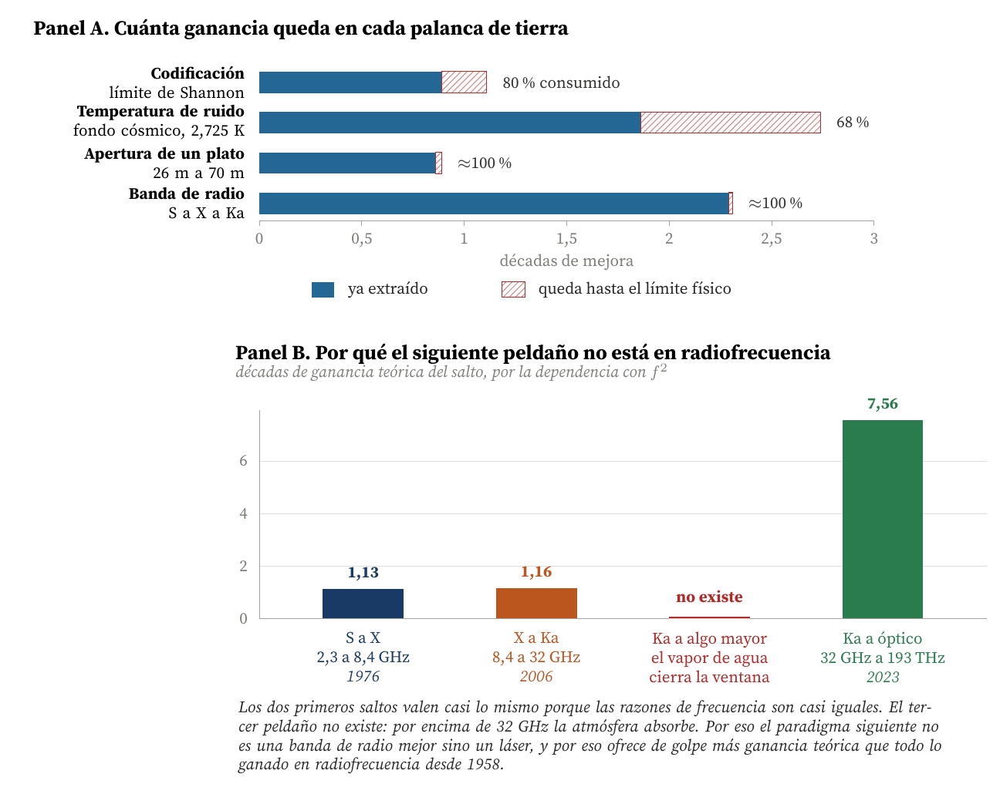
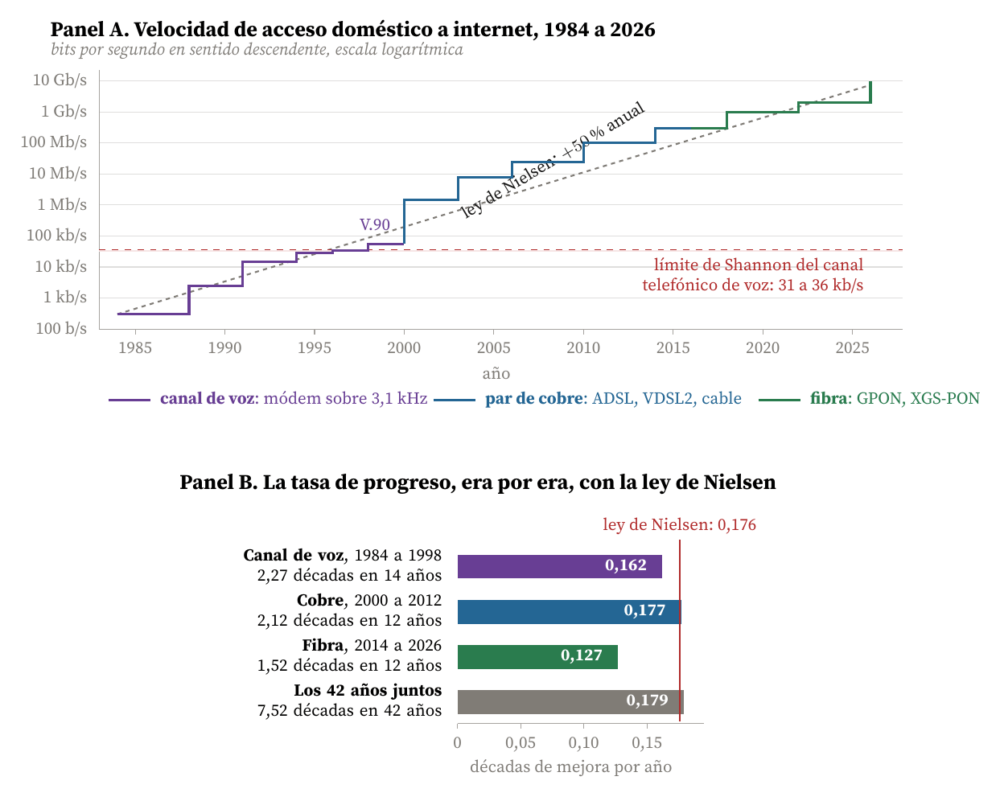
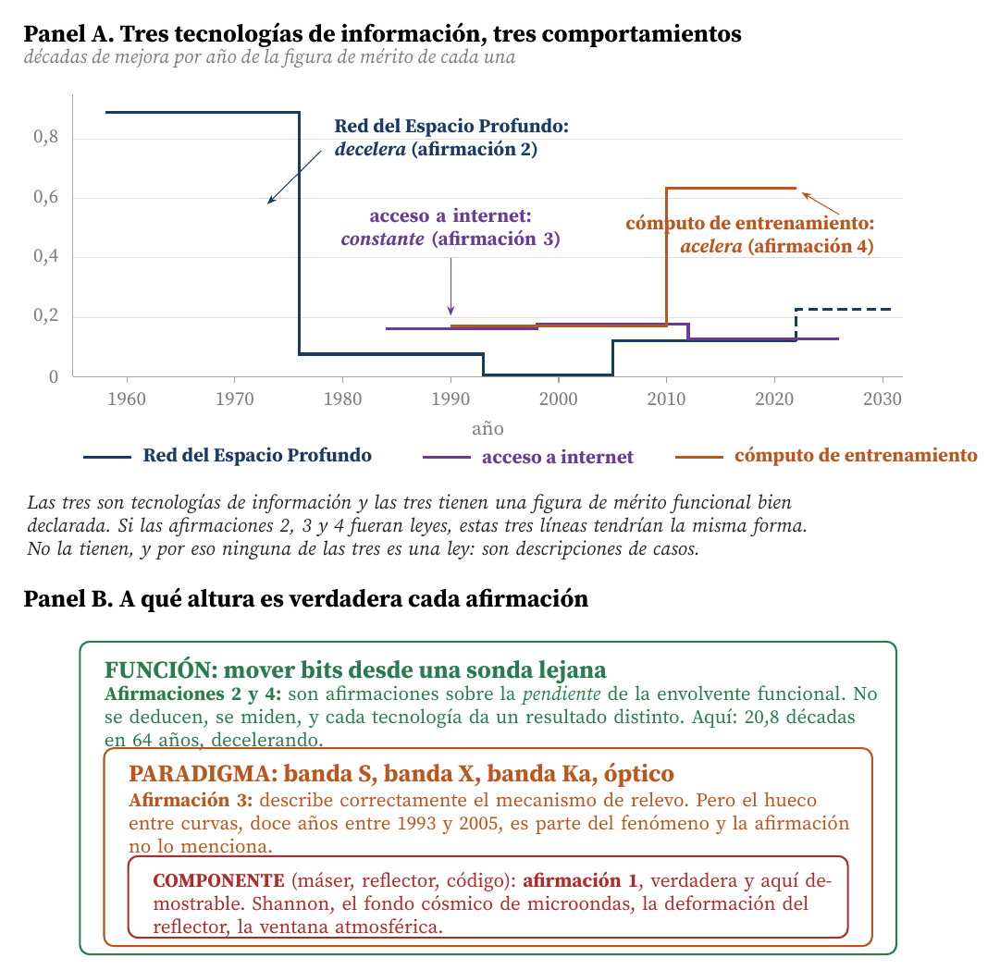

Las cuatro afirmaciones sobre el progreso tecnológico, medidas sobre los datos de la Red del Espacio Profundo y contrastadas con la velocidad de acceso a internet
Carlos Luis Rojas Aragonés
El planteamiento ofrece cuatro afirmaciones sobre cómo progresan las tecnologías y pide decidir cuáles son verdaderas. Mi respuesta corta es que la pregunta, tal como está redactada, no tiene una respuesta única, y que eso no es una evasiva sino el resultado de medir: las cuatro afirmaciones son la misma curva mirada a tres alturas distintas, y cada una es verdadera a una altura y falsa a las otras. El Cuadro 1 lo resume; el resto del documento lo sostiene con los números del propio caso.
| Afirmación | Veredicto | Por qué | |
|---|---|---|---|
| 1 | Todas saturan en una asíntota; el progreso exponencial no existe | Cierta la premisa, falsa la conclusión | Las asíntotas existen y aquí se demuestran, no se observan: en 1995 la codificación de la DSN ya había consumido el 80 por ciento de toda la ganancia que el teorema de Shannon permitirá jamás. Pero la función ganó 20,8 órdenes de magnitud en 64 años (apartado 4) |
| 2 | Exponencial con tasa decreciente por el ingreso marginal decreciente | Cierta aquí, falsa como ley | La envolvente de la DSN cae de 0,889 a 0,121 décadas al año, así que la conclusión se cumple. Pero el acceso a internet sostuvo 0,179 durante 42 años, y el mecanismo que actúa no es un rendimiento marginal genérico sino asíntotas con nombre (apartado 5) |
| 3 | Exponencial a tasa constante por alternancia de curvas S | La más útil de las cuatro | El mecanismo es literalmente lo que dibuja el gráfico de la JPL: banda S, banda X, banda Ka y óptico. Pero la alternancia sostiene el progreso, no garantiza la tasa: en la DSN alterna y aun así decelera (apartado 6) |
| 4 | Exponencial con tasa creciente por las capacidades humanas | No la sostiene ningún dato realizado | El único tramo acelerado del gráfico de la JPL es el que todavía no ha ocurrido. Y Bloom et al. (2020) miden lo contrario: sostener la tasa de Moore exige hoy 18 veces más investigadores que en 1971 (apartado 7) |
La afirmación 3 describe el mecanismo, la 1 describe el componente, y la 2 y la 4 son propiedades empíricas de cada tecnología concreta, no leyes. La Red del Espacio Profundo ganó 20,8 órdenes de magnitud en 64 años, lo que refuta la afirmación 1 en su conclusión; pero su tasa se derrumbó de 0,889 décadas al año en la era de banda S a 0,121 en la de banda Ka, con una meseta plana de doce años entre 1993 y 2005, lo que confirma la afirmación 2 y refuta la 4. La velocidad de acceso doméstico a internet, en cambio, sostuvo 0,179 décadas al año durante 42 años, un 51 por ciento anual, atravesando tres medios físicos distintos: eso confirma la afirmación 3 en su enunciado completo. Misma pregunta, dos respuestas opuestas, medidas con la misma unidad.
Distingo tres clases de número, porque mezclarlas es la forma más rápida de que un argumento sobre curvas S parezca más sólido de lo que es.
Lecturas del gráfico de la capacidad normalizada de la JPL (Jet Propulsion Laboratory, 2015), que es el dato primario de todo el apartado 3. Son lecturas visuales de un eje logarítmico de 24 décadas: les asigno una tolerancia de ±0,2 décadas por punto. Eso basta para las pendientes, que se calculan sobre diferencias de 2 a 16 décadas, y no basta para ningún escalón individual menor de medio orden de magnitud.
Valores citados de fuentes técnicas: la temperatura de ruido del sistema de 20,9 K y la relación Eb/N0 de 0,65 dB conseguida por Galileo vienen de Layland y Rauch (1997); la temperatura del fondo cósmico de microondas, 2,725 K, de Fixsen (2009); las velocidades de los módems y de las redes de acceso, de las recomendaciones de la Unión Internacional de Telecomunicaciones citadas en el apartado 8.
Cálculos propios, declarados donde se usan: las fronteras entre eras, las pendientes en décadas al año, las ganancias teóricas por cambio de banda, la capacidad de Shannon del canal telefónico y el reparto entre ganancia ya extraída y margen restante del Cuadro 3.
Antes de los datos hace falta el criterio, porque sin él las cuatro afirmaciones son indecidibles. La disciplina que propone de Weck (2022) es declarar la figura de mérito sobre la función prestada y no sobre la implementación, y es exactamente ahí donde las cuatro afirmaciones se separan. Hay tres alturas posibles:
La figura de mérito funcional de este caso es la que usa la propia JPL en su gráfico de capacidad: la tasa de datos del canal, en bits por segundo, normalizada a una distancia de 5 unidades astronómicas, es decir, a la distancia de Júpiter. La normalización importa porque la potencia recibida cae con el cuadrado de la distancia, de modo que comparar la tasa bruta de una sonda lunar con la de una sonda a Neptuno no mide tecnología, mide geometría.
Con esa figura de mérito declarada, las cuatro afirmaciones dejan de ser opiniones. La 1 es una afirmación sobre componentes. La 3 es una afirmación sobre cómo se encadenan los paradigmas. Y la 2 y la 4 son afirmaciones sobre la pendiente de la envolvente funcional, que es un número que se mide. El Cuadro 2 y la Figura 1 lo miden.

Figura 1. Panel A: la capacidad normalizada de la Red del Espacio Profundo, redibujada a partir del gráfico de escalones de la JPL (Jet Propulsion Laboratory, 2015). Cada escalón es una tecnología que entra en servicio; el color marca el paradigma de radiofrecuencia. Las rectas punteadas son la tendencia de cada era. La lectura clave no es el recorrido total, que es enorme, sino que las rectas punteadas no son paralelas: cada era progresa más despacio que la anterior. Panel B: esa misma información como tasa. La primera era avanzó siete veces más deprisa que la de banda Ka, y entre 1993 y 2005 la envolvente no se movió. Elaboración propia sobre Jet Propulsion Laboratory (2015).
La Figura 1 redibuja el gráfico de escalones que la JPL publica como medida oficial de la capacidad de la red (Jet Propulsion Laboratory, 2015), y el Cuadro 2 recoge la aritmética.
El recorrido total es el dato que todo el mundo cita: de 10−13 bits por segundo a la distancia de Júpiter con Explorer 1 en 1958 a unos 6×107 con los conjuntos de siete antenas de 34 metros en banda Ka en 2022. Son 20,8 órdenes de magnitud en 64 años, una media de 0,325 décadas al año, es decir, multiplicar por 2,11 cada año durante seis décadas. Ninguna tecnología terrestre de uso civil se acerca a eso.
Y esa media es engañosa, que es el hallazgo del apartado. Está dominada por los primeros dieciocho años: si se retira la era de banda S, los 46 años restantes suman 4,8 décadas, es decir 0,104 décadas al año, veinte veces menos.
| Era | Años | Décadas | Déc./año | Duplica en | Qué la cerró |
|---|---|---|---|---|---|
| Banda S | 1958–1976 | 16,00 | 0,889 | 4,1 meses | La banda de 2,3 GHz agotó su ganancia por apertura y por potencia |
| Banda X | 1977–1993 | 1,22 | 0,076 | 47,3 meses | Se agotaron el reflector de 70 m, el máser y la codificación concatenada |
| Meseta | 1993–2005 | 0,08 | 0,007 | 45,6 años | Nada la cerró: no hubo paradigma nuevo ni presupuesto para uno |
| Banda Ka | 2006–2022 | 1,93 | 0,121 | 29,9 meses | La absorción atmosférica impide subir más en radiofrecuencia |
| Óptico (proy.) | 2023–2031 | 1,82 | 0,228 | 15,8 meses | Sin cerrar; el salto a 193 THz abre 7,6 décadas teóricas |
| Total realizado | 1958–2022 | 20,78 | 0,325 | 11,1 meses | |
| Sin la era de S | 1977–2022 | 4,78 | 0,104 | 34,8 meses |
Enunciado: todas las tecnologías terminan alcanzando un punto de saturación, lo que dificulta su progreso más allá de una asíntota determinada. El progreso exponencial no existe.
Mi respuesta es que la primera frase es cierta y la segunda es falsa, y que el caso de la DSN es el mejor sitio posible para verlo porque aquí las asíntotas no se conjeturan a partir de los datos: se deducen de la física y luego se comprueba que los datos las respetan. Eso es infrecuente. En la mayoría de las tecnologías la asíntota se postula porque la curva se aplana, y eso es un argumento circular. Aquí no.
El Cuadro 3 recoge las cuatro palancas que la DSN controla desde tierra, cada una con su asíntota, el origen físico de esa asíntota y cuánta ganancia queda por extraer. El Panel A de la Figura 2 lo dibuja.
| Palanca | La asíntota y de dónde sale | Extraído y lo que queda | Gastado |
|---|---|---|---|
| Codificación | El teorema de Shannon (1948) fija el mínimo absoluto en Eb/N0 = −1,59 dB. Sin codificar hacen falta unos 9,6 dB; Galileo, con un código concatenado (14, 1/4) y decodificación en cuatro etapas, bajó a 0,65 dB (Layland y Rauch, 1997) | 8,95 dB / 2,24 dB (0,89 / 0,22 déc.) | 80,0 % |
| Temperatura de ruido | El suelo es el fondo cósmico de microondas, 2,725 K (Fixsen, 2009), más la atmósfera. La red opera hoy a 20,9 K en banda X sobre la antena de 70 m en el cénit (Layland y Rauch, 1997) | hasta 20,9 K / factor 7,7 (0,88 déc.) | 67,9 % |
| Apertura | La ganancia va con el cuadrado del diámetro, pero un reflector orientable se deforma por su propio peso. El paso de 26 a 64 m dio 0,78 décadas; el de 64 a 70 m, en 1988, dio 0,08 | 0,86 déc. / no hay más en un solo plato | ≈100 % |
| Banda | La ganancia va con el cuadrado de la frecuencia. S a X da 1,13 décadas; X a Ka da 1,16. Por encima de 32 GHz la absorción del vapor de agua hace inutilizable la ventana | 2,29 déc. / 0 dentro de radiofrecuencia | ≈100 % |
Los tres números que más me importan de ese cuadro son estos:
Y a pesar de todo eso, la función ganó 20,8 órdenes de magnitud. Por eso la segunda frase de la afirmación 1 es falsa: el progreso exponencial no solo existe, sino que este caso es uno de los ejemplos más extremos que se conocen. Lo que no existe es progreso exponencial indefinido en un componente, que es una afirmación mucho más modesta y que nadie discute.
Aquí quiero recoger y matizar mi propia intuición inicial, que era que en la DSN «las limitaciones eran más regulaciones humanas que otra cosa», por lo que recuerdo de la entrevista al doctor Deutsch (Deutsch, 2026). Sigo pensando que eso es cierto hoy, y el apartado 7 lo desarrolla. Pero al hacer las cuentas he tenido que corregirme: las limitaciones de la codificación y de la temperatura de ruido no son regulatorias en absoluto. Son el teorema de Shannon y el fondo cósmico de microondas, y no admiten negociación con nadie.

Figura 2. Panel A: las cuatro palancas que la red controla desde tierra, con la ganancia ya extraída y la que queda hasta el límite físico. Ninguna de las cuatro barras rayadas es larga, y dos son prácticamente inexistentes: eso es la afirmación 1, comprobada. Panel B: la escalera de frecuencia, que es la razón por la que la afirmación 3 puede seguir cumpliéndose pese al Panel A. Elaboración propia sobre Layland y Rauch (1997), Shannon (1948) y Fixsen (2009).
Enunciado: las tecnologías experimentan un progreso exponencial, pero la tasa de progreso tiende a disminuir con el paso del tiempo, porque todas se ven afectadas por la ley de la disminución del ingreso marginal.
Esta era mi respuesta inicial y sigo pensando que su conclusión es correcta para este caso. Los datos del Cuadro 2 la confirman sin ambigüedad: 0,889, luego 0,076, luego 0,007, luego 0,121 décadas al año. La secuencia es decreciente salvo el repunte final, y ese repunte no recupera ni la séptima parte de la tasa original.
Pero hay dos correcciones que tuve que hacerme a mí mismo al medir, y las dos importan más que el veredicto.
Primera: la palabra «todas» no se sostiene. Es una generalización que el propio caso no puede probar, porque un caso no prueba una ley universal, y que además tiene contraejemplos medidos. El apartado 8 presenta uno, y no es el único: Koh y Magee (2006) estudian el progreso funcional de las tecnologías de la información durante más de un siglo y encuentran tasas exponenciales sostenidas, no decrecientes, en varias funciones; Farmer y Lafond (2016) y Nagy et al. (2013) llegan a lo mismo analizando decenas de series de coste y rendimiento. Si la disminución del ingreso marginal fuera una ley universal, esas series no existirían.
Segunda, y esta es la que más me hizo cambiar de opinión: el mecanismo que enuncia la afirmación no es el que actúa aquí. «Ingreso marginal decreciente» describe una situación en la que cada unidad adicional de esfuerzo rinde un poco menos que la anterior, de forma suave y continua. Lo que la Figura 1 muestra no es eso. Muestra tres cosas distintas:
Dicho de otro modo: la afirmación 2 acierta en el resultado y se equivoca en la causa, y en gestión tecnológica la causa es lo que sirve para decidir. Si uno cree que la desaceleración es un ingreso marginal decreciente, la respuesta es invertir más en lo mismo. Si uno sabe que es una asíntota física más una decisión de capital aplazada, la respuesta es preparar el paradigma siguiente, que es lo que la JPL acabó haciendo con el enlace óptico.
Enunciado: las tecnologías experimentan un progreso exponencial y, en algunos casos, como el de las tecnologías funcionales, la tasa de progreso se mantiene más o menos constante, por la alternancia entre curvas S.
Esta es, de las cuatro, la más útil, y comparto la intuición que ya tenía: cuando una curva S tiende a la baja, viene otra tecnología a reemplazarla. La quiero afinar en dos direcciones, una a favor y otra en contra.
A favor, y es un argumento fuerte: el gráfico de la JPL no es que sea compatible con la alternancia de curvas S, es que la dibuja explícitamente. Los cuatro colores de la Figura 1 son cuatro paradigmas, y el gráfico original de la JPL incluso lo advierte en su pie: los saltos grandes de capacidad proceden de los cambios de banda de frecuencia (Jet Propulsion Laboratory, 2015). La secuencia es limpia: la banda S agota su apertura y su potencia hacia 1975, y en 1976 entra la banda X con un salto de 1,3 décadas; la banda X agota el máser, el reflector de 70 metros y la codificación concatenada hacia 1993, y en 2006 entra la banda Ka; la banda Ka agota la ventana atmosférica, y en 2023 entra el óptico, que ya ha demostrado 267 megabits por segundo desde 0,19 unidades astronómicas (NASA, 2023). Cada paradigma muere por asíntotas propias, que son las del Cuadro 3, y su sucesor no lo mejora: lo sustituye. Es exactamente lo que describe Foster (1986) y lo que Sood y Tellis (2005) encuentran al examinar empíricamente la evolución de varias tecnologías: la unidad de análisis útil no es la curva sino la familia de curvas que se relevan.
En contra, y es la parte que no había visto antes de medir: la alternancia sostiene el progreso, pero no lo mantiene a tasa constante. La DSN alterna cuatro veces y aun así su tasa cae un factor de siete. La razón es que un relevo de paradigma no es gratuito ni instantáneo: entre que la banda X se agota, hacia 1993, y que la banda Ka entra en servicio, en 2006, pasan doce años en los que no ocurre nada. El hueco entre curvas S es tan parte del fenómeno como el salto. Y como la afirmación 3 solo menciona el salto, describe bien el mecanismo y mal la consecuencia.
Donde la afirmación 3 se cumple entera, incluida la parte de la tasa constante, es en el caso del apartado siguiente. Y creo que la diferencia entre los dos casos es la lección más transferible de todo el ejercicio.
Enunciado: las tecnologías experimentan un progreso exponencial y la tasa de progreso aumenta con el paso del tiempo como resultado del desarrollo de las capacidades de la humanidad.
Mi respuesta inicial fue que esto es cierto, porque todo eso ayuda al desarrollo. Al medir he tenido que separar dos cosas que había juntado: que una capacidad ayude no significa que la tasa aumente. Son afirmaciones distintas y solo la segunda es la que hay que comprobar.
Sobre este caso la respuesta es limpia y negativa. Ningún tramo realizado de la Figura 1 es más rápido que el tramo anterior, salvo el paso de la meseta a la banda Ka, que es una recuperación parcial y no una aceleración. El único tramo del gráfico cuya pendiente supera a la anterior de forma clara, el óptico a 0,228 décadas al año, es el que todavía no ha ocurrido. Y conviene notar que es exactamente el tramo donde más barata resulta el optimismo.
Hay además un argumento cuantitativo general en contra, y es el que más peso tiene: Bloom et al. (2020) miden la productividad de la investigación en varios sectores y encuentran que mantener la duplicación de densidad de transistores de la ley de Moore exige hoy más de 18 veces los investigadores que hacían falta a comienzos de los años setenta. Esa cifra es la refutación directa de la afirmación 4 tal como está enunciada: las capacidades humanas agregadas sí han crecido, y el efecto observable no ha sido una tasa creciente sino una tasa constante comprada cada vez más cara.
Dicho lo cual, la afirmación 4 tiene un caso real a su favor, y sería deshonesto no ponerlo. Sevilla et al. (2022) miden el cómputo de entrenamiento de los sistemas de aprendizaje automático y encuentran un cambio de régimen nítido: antes de 2010 se duplicaba cada 21,3 meses, en línea con la ley de Moore, es decir 0,170 décadas al año; desde 2010 se duplica cada 5,7 meses, es decir 0,634 décadas al año, casi cuatro veces más rápido. Eso es una aceleración medida, no proyectada. Pero es una aceleración de un insumo en un dominio durante una década, y convertir eso en una ley general del progreso tecnológico, que es lo que hace Kurzweil (2001), es el mismo error de extrapolación que cometería quien tomase los 0,889 décadas al año de la era de banda S como la tasa normal de la DSN.
Queda una pieza que creo que es la más interesante del caso, y es donde mi lectura inicial de la entrevista al doctor Deutsch (Deutsch, 2026) sí da en el blanco, aunque no como argumento a favor de la afirmación 4 sino como matiz a las afirmaciones 2 y 3.
La restricción activa de la DSN se ha desplazado de la física a las instituciones. En 1965 lo que limitaba la capacidad era el ruido del receptor. En 2026 lo que la limita es, por este orden: el reparto internacional del espectro, que decide qué bandas puede usar una sonda; el ciclo presupuestario plurianual, que decide cuándo se construye una antena; la edad del parque, con reflectores instalados en los años sesenta que hay que mantener mientras se construyen los nuevos; y las ventanas de lanzamiento, que fijan cuándo una tecnología nueva puede volar. Ninguna de esas cuatro cosas es un problema de ingeniería, y las cuatro juntas explican la meseta de 1993 a 2005 mucho mejor que cualquier asíntota.
Para un director de tecnología eso tiene una consecuencia práctica inmediata: en un sistema maduro, el calendario del relevo entre curvas S lo fija la organización, no el laboratorio, y por tanto el hueco entre curvas es una variable de gestión y no un dato de la naturaleza.
El planteamiento pide exponer brevemente un caso tecnológico distinto que me interese y cuyo sistema haya evolucionado con el tiempo. El mío es la velocidad de conexión a internet desde un domicilio, desde los módems de finales de los ochenta hasta la fibra de hoy. Me interesa porque es el caso espejo del de la DSN: la misma unidad de medida, el mismo tipo de gráfico y la misma alternancia de paradigmas, pero el resultado opuesto. Entre 1984 y 2026 la velocidad pasó de 300 bits por segundo a 10 gigabits por segundo, 7,52 órdenes de magnitud, atravesando tres medios físicos completamente distintos: el canal telefónico de voz, el par de cobre usado en todo su espectro y la fibra óptica. Y a diferencia de la DSN, lo hizo a una tasa prácticamente constante durante cuarenta años: 0,179 décadas al año, es decir un 51 por ciento anual, que es el valor que Jakob Nielsen postuló en 1998 como ley empírica y que su propia serie personal sigue cumpliendo dos décadas después (Nielsen, 2019). Es, en mi opinión, el mejor ejemplo disponible de la afirmación 3 en su forma completa, incluida la parte que la DSN no cumple.
| Paradigma | Norma y año | Velocidad | Qué lo cerró |
|---|---|---|---|
| Canal de voz, 3,1 kHz | Bell 212A, 1984 ITU-T V.32bis, 1991 ITU-T V.34, 1994 ITU-T V.90, 1998 | 300 b/s 14,4 kb/s 33,6 kb/s 56 kb/s | El teorema de Shannon. Con 3,1 kHz de ancho y entre 30 y 35 dB de relación señal a ruido, la capacidad del canal está entre 31 y 36 kb/s: V.34 se sentó encima del límite. V.90 solo lo superó dejando de usar el canal analógico en un sentido |
| Par de cobre, todo el espectro | ITU-T G.992.1, 1999 ITU-T G.992.5, 2003 VDSL2 y DOCSIS 3.0, 2006 | 1,5 Mb/s 24 Mb/s 100 Mb/s | La atenuación del cobre, que crece con la frecuencia y con la longitud del bucle. Se compensó acercando la fibra al abonado, que ya es el paradigma siguiente disfrazado |
| Fibra hasta el domicilio | ITU-T G.984, 2003 ITU-T G.9807.1, 2016 | 1 Gb/s 10 Gb/s | Nada físico. La fibra tiene órdenes de magnitud de margen. Lo que frena hoy es la demanda: por encima de 1 Gb/s el usuario doméstico no distingue la diferencia |
El Cuadro 4 y la Figura 3 desarrollan el caso. Tres cosas merecen subrayarse.
La primera asíntota es demostrable, igual que en la DSN. La capacidad de un canal de ancho B con relación señal a ruido S/N es
C = B log2(1 + S/N)
(Shannon, 1948). Para el canal telefónico, B = 3100 Hz y una relación señal a ruido realista de entre 30 y 35 dB, la ecuación da entre 30,9 y 36,0 kb/s. La norma V.34 alcanzó 33,6 kb/s. No se quedó cerca del límite: se sentó justo encima de él. Y la norma siguiente, V.90, no rompió esa barrera mejorando el módem, porque eso es imposible: la rompió cambiando el canal, aprovechando que el extremo del proveedor ya estaba digitalizado y que por tanto una de las dos direcciones se ahorraba una conversión analógica. Eso es literalmente un cambio de curva S forzado por una asíntota demostrada.
La segunda: las tres eras tienen casi la misma pendiente. El Panel B de la Figura 3 las mide: 0,162 décadas al año en el canal de voz, 0,177 en el cobre de banda ancha y 0,127 en la fibra, frente al 0,176 que predice la regla del 50 por ciento anual de Nielsen (2019). Tres medios físicos radicalmente distintos, tres industrias distintas, tres regulaciones distintas, y la misma pendiente dentro del margen de una lectura razonable. Eso es la afirmación 3 cumplida entera, y es lo que la DSN no consigue.
La tercera, y es la que menos esperaba: lo que está frenando la última era no es la física. La fibra tiene margen de sobra; XGS-PON entrega 10 gigabits y las normas de 25 y 50 gigabits ya están publicadas. Si la pendiente del tramo de fibra baja a 0,127 décadas al año no es porque cueste más conseguir la mejora, sino porque por encima de un gigabit el usuario doméstico deja de notarla y deja de pagarla. La restricción activa se ha movido de la oferta a la demanda. Es un desplazamiento distinto del de la DSN, donde la restricción se movió de la física a las instituciones, pero el efecto sobre la curva es el mismo, y ninguno de los dos aparece en el enunciado de las cuatro afirmaciones.

Figura 3. Panel A: la misma figura de mérito y el mismo tipo de gráfico que la Figura 1, aplicados al acceso doméstico a internet. Los tres colores son tres medios físicos distintos. La recta gris es la regla del 50 por ciento anual de Nielsen (2019), trazada desde el primer punto y no ajustada: la serie la sigue durante cuarenta años. La línea roja es la capacidad de Shannon del canal telefónico, y se ve que la era del módem no se detuvo por falta de ingenio sino porque chocó con ella. Panel B: las pendientes de las tres eras son casi iguales, que es justamente lo que no ocurre en la Red del Espacio Profundo. Elaboración propia sobre las normas citadas en el Cuadro 4.
La Figura 4 pone las tres series que he usado en la misma unidad, décadas de mejora por año, y las tres se comportan de manera distinta: la Red del Espacio Profundo decelera, el acceso a internet se mantiene y el cómputo de entrenamiento de los modelos de aprendizaje automático acelera. Las tres son tecnologías de información, las tres son funcionales en el sentido de Koh y Magee (2006) y las tres están medidas con figuras de mérito declaradas.

Figura 4. Panel A: las tres series en la misma unidad. La de la DSN es cálculo propio sobre Jet Propulsion Laboratory (2015); la de acceso a internet, cálculo propio sobre las normas del Cuadro 4 y Nielsen (2019); la del cómputo de entrenamiento procede de Sevilla et al. (2022), que mide duplicaciones cada 21,3 meses antes de 2010 y cada 5,7 después. Panel B: la estructura de la respuesta. Las cuatro afirmaciones no compiten: hablan de tres alturas distintas del mismo sistema. Elaboración propia.
Eso es, para mí, la respuesta al planteamiento. Las afirmaciones 1 y 3 son verdaderas porque describen mecanismos, y los mecanismos se pueden verificar en cualquier caso. La 1 describe qué le pasa a un componente y aquí se puede demostrar con Shannon y con el fondo cósmico de microondas. La 3 describe cómo se relevan los paradigmas y aquí está dibujada en el propio gráfico oficial de la JPL.
Las afirmaciones 2 y 4 no son verdaderas ni falsas en general, porque no son mecanismos sino mediciones, y la medición da resultados opuestos según la tecnología: la 2 se cumple en la DSN y no en el acceso a internet; la 4 no se cumple en ninguna de las dos y sí en el cómputo de entrenamiento de modelos. Presentarlas como leyes es el error; presentarlas como preguntas que hay que contestar midiendo, para cada tecnología concreta y con una figura de mérito declarada, es exactamente el método que propone de Weck (2022) y es lo único que sirve para decidir dónde invertir.
Bloom, N., Jones, C. I., Van Reenen, J. y Webb, M. (2020). Are ideas getting harder to find? American Economic Review, 110(4), 1104–1144. https://doi.org/10.1257/aer.20180338
de Weck, O. L. (2022). Technology roadmapping and development: A quantitative approach to the management of technology. Springer. https://doi.org/10.1007/978-3-030-88346-1
Deutsch, L. J. (2026). Entrevista sobre la evolución de la Red del Espacio Profundo [material audiovisual del curso].
Farmer, J. D. y Lafond, F. (2016). How predictable is technological progress? Research Policy, 45(3), 647–665. https://doi.org/10.1016/j.respol.2015.11.001
Fixsen, D. J. (2009). The temperature of the cosmic microwave background. The Astrophysical Journal, 707(2), 916–920. https://doi.org/10.1088/0004-637X/707/2/916
Foster, R. N. (1986). Innovation: The attacker's advantage. Summit Books.
International Telecommunication Union. (1998). Recommendation ITU-T V.34: A modem operating at data signalling rates of up to 33 600 bit/s for use on the general switched telephone network. https://www.itu.int/rec/T-REC-V.34
International Telecommunication Union. (1998). Recommendation ITU-T V.90: A digital modem and analogue modem pair for use on the PSTN at data signalling rates of up to 56 000 bit/s downstream. https://www.itu.int/rec/T-REC-V.90
International Telecommunication Union. (1999). Recommendation ITU-T G.992.1: Asymmetric digital subscriber line (ADSL) transceivers. https://www.itu.int/rec/T-REC-G.992.1
International Telecommunication Union. (2009). Recommendation ITU-T G.992.5: Asymmetric digital subscriber line transceivers 2 (ADSL2), extended bandwidth (ADSL2plus). https://www.itu.int/rec/T-REC-G.992.5
International Telecommunication Union. (2016). Recommendation ITU-T G.9807.1: 10-Gigabit-capable symmetric passive optical network (XGS-PON). https://www.itu.int/rec/T-REC-G.9807.1
Jet Propulsion Laboratory. (2015). Profile of deep space communications capability: Growth of normalized deep space communications capacity. DESCANSO. https://descanso.jpl.nasa.gov/performmetrics/stairstep.pdf
Koh, H. y Magee, C. L. (2006). A functional approach for studying technological progress: Application to information technology. Technological Forecasting and Social Change, 73(9), 1061–1083. https://doi.org/10.1016/j.techfore.2006.06.001
Kurzweil, R. (2001). The law of accelerating returns. https://www.thekurzweillibrary.com/the-law-of-accelerating-returns
Layland, J. W. y Rauch, L. L. (1997). The evolution of technology in the Deep Space Network: A history of the Advanced Systems Program (TDA Progress Report 42-130). Jet Propulsion Laboratory. https://ipnpr.jpl.nasa.gov/progress_report/42-130/130H.pdf
NASA. (2023). Deep Space Optical Communications (DSOC): Fact sheet. Jet Propulsion Laboratory. https://www.nasa.gov/wp-content/uploads/2023/07/dsoc-fact-sheet-06152023.pdf
Nagy, B., Farmer, J. D., Bui, Q. M. y Trancik, J. E. (2013). Statistical basis for predicting technological progress. PLoS ONE, 8(2), e52669. https://doi.org/10.1371/journal.pone.0052669
Nielsen, J. (2019). Nielsen's law of internet bandwidth. Nielsen Norman Group. https://www.nngroup.com/articles/law-of-bandwidth/
Sevilla, J., Heim, L., Ho, A., Besiroglu, T., Hobbhahn, M. y Villalobos, P. (2022). Compute trends across three eras of machine learning. En 2022 International Joint Conference on Neural Networks (IJCNN) (pp. 1–8). https://doi.org/10.1109/IJCNN55064.2022.9891914
Shannon, C. E. (1948). A mathematical theory of communication. Bell System Technical Journal, 27(3), 379–423. https://doi.org/10.1002/j.1538-7305.1948.tb01338.x
Sood, A. y Tellis, G. J. (2005). Technological evolution and radical innovation. Journal of Marketing, 69(3), 152–168. https://doi.org/10.1509/jmkg.69.3.152.66361